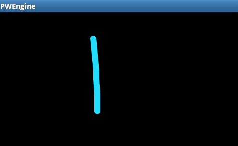
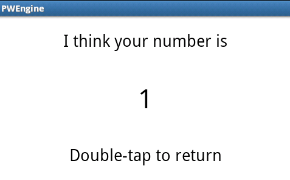
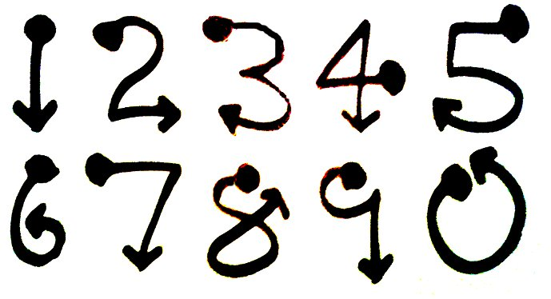
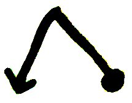
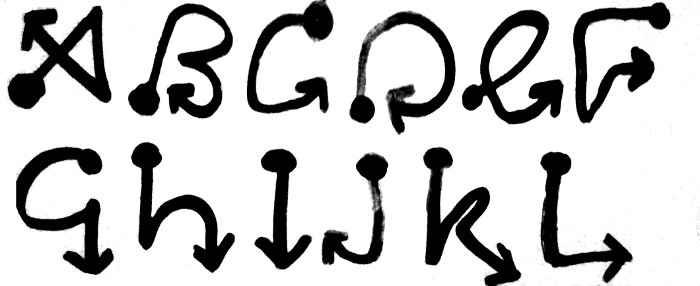
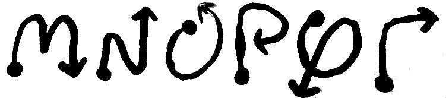
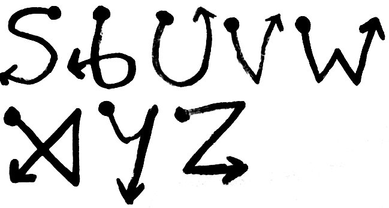
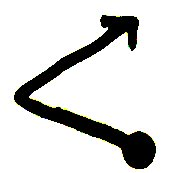
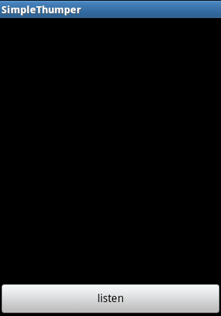

The PredictionTech 1.0 package consists of two Android applications and this PDF document. With these two applications you will be able to apparently predict thoughts, decisions and events, secretly communicate with a partner, perform card effects without a deck of cards and more. In some of the effects explained in this document, your smartphone is brought out into play, and in others it remains entirely hidden so that no one need know you are even carrying a phone.
PWEngine (the main app) is an application that enables you to pocket-write using your Android device. By tracing numerals and letters on the screen with your finger when the device (and your hand) are inside your pocket, you can secretly enter information and deploy it while simply appearing to be in a casual, hands-in-pocket stance. You can change your home screen wallpaper to one of many indexed images secretly while the device is in your pocket, you can write numbers or words and send them off to a Web application of your choosing to be acted upon, and there will be other avenues to deploy pocket-written information in future revisions. If you have used an app like Google's Gesture Search, this works on a similar principle except the interface is vastly simplified to facilitate hidden operation.
SimpleThumper.apk
It is not absolutely essential to install this app unless you find a use for it. This second package (SimpleThumper.apk) is designed to work with the system. You can install this app on the Android phone of a spouse, trusted friend or partner. They will need some practice in order to work with the thumper. This app is explained later in Appendix A of this document; suffice it to say for now you can pocket-write words and numbers invisibly using the PWEngine app, and have them sent to the thumper on a second phone for secret communication. Both people need to be connected to the Web to do this; it is an Internet-mediated simple message service. Very simple in fact!
This app is not
offered through the Android Market, for reasons of secrecy and exclusivity.
We only want people who are serious about mentalism to use this utility. Moreover,
there are a couple of example Web-based effects incorporated with this app that
have been personalised for each user. This means that you will have to set your
Android device to "install non-Market apps" if you have not done so
already. One guide to the correct settings to do so is at http://pocketnow.com/how-to/how-to-install-non-market-apps-on-your-android-phone
Now you may use your sync software or email program to download the PWEngine.apk
file onto your device. You should get a "notification" letting you
know the file is in your SD card's "download" location. You can click
on the notification and the app should start installing. Contact me at ged_grey@yahoo.co.uk
if you have any problems with this step.
PWEngine.apk asks for several permissions to use various features. I
shall tell you exactly how it uses these permissions.
Write to SD
card: to make a folder PWEngine-images on your SD card where it will
search for user-defined wallpapers (see effect later in this document).
Internet: to optionally deploy pocket-written information to a Web resource
of your choice, and to optionally use a Bing™ spell checker*.
Vibrate: to optionally provide tactile feedback in Morse code or binary
number representations, or to confirm certain actions.
Set wallpaper: to optionally change your home screen wallpaper in the
service of an effect described below.
The app should install on your SD card if you are running Android 2.2 or higher, along with the sample wallpapers that make up the bulk of the package.
*Recently the spell-checker was pulled by Microsoft. But see below for another way to spell-check, even with numbers!
Your installer should offer you the option to run the program straight away, or you may run it later by tapping on the PWEngine icon. Align your device so the title bar is at the top. PWEngine defaults to landscape view so you should be turning your device sideways at this point.
This minimalist screen is what you draw on; first you will be wanting to check
it out in front of you. Later on, when you get the gist of how it works, you
can easily use this app to input data secretly from inside your pocket. Go ahead
and trace a line down the middle of the screen:

This will fade quickly after tracing it. Now double tap the surface (a "double
tap" is two touches on the same spot of the surface in quick succession,
analogous to a "double click" on a mouse button). This "commits"
the writing - i.e. it lets the device know that you have finished entering your
numbers or letters. Currently, this secretly-entered information can be deployed
in a few ways which are described in Menu>Output mode below. By default
the app is set up for Test mode. Double tap on the screen now, you should
see:

This is Test mode: don't worry, we can do some more impressive things than this, which we'll get to very shortly! Double tap on this new screen to return to the writing surface.
Now you can experiment with entering some more numbers, thus (follow the direction of the arrows, start at the "blob" and trace the numeral without lifting your finger off the screen. Obviously, the blob and arrow are just there for illustration and don't need to be drawn themselves!):

Lift your finger off the writing surface briefly after inputting each
numeral. You can "write over the top" of previously entered numerals;
it makes no odds on a digital entry system like this. When you have written
the desired number, double tap to confirm it.
A special entry symbol you might want to use is the "reset" symbol:

If you feel you have made a mistake, write this symbol to clear your number so you can start again.
Letters
When you have Menu>Input mode set to Letters, you may, in a similar manner, write letters on the surface. The way to trace these letters are as follows:
|  |
|  |
|  |
Again, a double tap commits your text for output.
Also when in this mode of input, a single brief tap on the screen will
insert a space into your text. So you can write short phrases like forename/surname
combinations, adjective/noun combinations, and more.
The reset symbol works the same as it does with numbers, clearing the memory so you can start over:
Also, there is another symbol you can use in this mode, the backspace symbol, which is drawn thus:

This works in the same way as any backspace key; it will delete the last letter written (e.g. flint becomes flin).
You can set the orientation of the writing surface to Portrait or Landscape, whichever is more convenient. I use Landscape when my phone is in my coat pocket and Portrait for inside my jeans pocket. When you have got used to inputting numerals and letters in plain sight, you will be wanting to practise with the device inside your pocket in secrecy. There are some options for tactile feedback that you can enable for practising in private. Or if you are practising your PWing in public, one option is to simply pretend that you have received a text message, whether you opt for visual feedback, tactile feedback, or both.
Another pocket-writing option I occasionally make use of, though this depends on your performance attire, is to PW in the large "pouch pocket" of a hoodie. This is very easy as both hands can meet and stabilise the writing surface.
From
the PWing surface, tap the Menu button to configure how you want to configure
PWEngine:
Set orientation
This locks the writing surface in either Portrait or Landscape mode, depending on which option is checked.
Input mode
Numerals
The default operation mode of this app, you can get an awful lot done with numbers,
just see Corinda step 8 for example.
Letters
This may take more practice to get the letters down, especially when writing
in the pocket.
Output mode
Test mode
When you double-tap the screen in test mode, your device displays the number
that it thinks you have written on the surface. Double-tap on this new screen
to dismiss it and return to the PWing surface.
You can also add vibration feedback by selecting Options>Auto-thump (in
test mode).
If you are inputting letters, the device will feed back your text (or
the app's interpretation thereof!) in Morse code.
Auto-thump will vibrate any written number in binary, from low to high
bits. A long vibration is a one, and a short vibration is a zero.
Example 1: the number 5 will be vibrated by long - short - long. This is in
reverse from how you would normally depict it visually, and sends the message
"add 1, do not add 2, add 4".
Example 2: the number 14 will be vibrated by short - long - long - long. Again,
this is in reverse from how you would normally see it depicted, and sends the
message "do not add 1, add 2, add 4, add 8". The slider sets the speed
at which this thumping takes place.
Wallpaper effect
There are two settings for this effect, which you can see by going to
Wallpaper location on the menu. The default setting Use preset (cards)
refers to a sample effect with some images included with the app.
Use preset (cards): This sample effect allows you to set any named (or
peeked*, etc.) card as your phone's wallpaper, in secrecy. The app then exits,
simulating a Home key press to take you back to the home screen, so you can
tap the power button to lock/standby your phone as you bring it out of your
pocket, and then when you subsequently unlock it, or even allow the other party
to do so, the home screen, with the playing card in question as a background,
is the first thing seen.
Set Input mode>Numerals
Set Output mode>Wallpaper effect
Set Wallpaper location>Use preset (cards)
Optionally, set Options>Vibrate on wallpaper change
As I say this
last setting is enabled by default initially...
When using this preset, pocket-write a number between 1 and 52. Make
sure Menu>Input mode is set to Numbers, else you will just
get the 52 card gag as explained below.
The number you write is best mentally determined thus: Ace is 1, two is 2, etc...
Jack being 11, Queen being 12 and King 13.
For the suit Clubs: add nothing
For the suit Hearts: add to 13
For the suit Spades: add to 26
For the suit Diamonds: add to 39
Example 1: the 7 of Spades is 7 + 26 = 33
Example 2: the Queen of Hearts is 12 + 13 = 25
You can always break the suit/card selection process down a bit if the in-performance
arithmetic is daunting at first. We all know that even the simplest of sums
and memory-recalls can go awry in the heat of the moment! By "breaking it down"
I mean, for example, asking one participant for a suit, getting your bearings
by mentally noting the suit-number needed, and asking another participant for
a value, then adding that to the suit-number.
When you then double-tap the screen, your number is translated to the appropriate
card, which is set as your phone's wallpaper.
In case of any serious confusion as to which number has been written by the
app, it will set as wallpaper the "52 card gag screen" which displays all the
cards in an albeit cramped fashion. Any number received over 52 will be treated
as 52 (King of Diamonds), and zero will activate the 52 card gag.
*For peeking and billet work. I highly recommend Elliott Bresler's Switchcraft (http://sites.google.com/site/ebswitch/home).
Use own images: When the app is first run, it creates a folder on your SD card named PWEngine-images. Whatever you place in here (as long as it is a JPG or PNG image!) will be used for this effect when this setting is enabled. You can name them numerically or with (lower-case) letters, but don't mix the two as there is not (yet) a way to switch input modes in pocket-writing. In operation, you write the name of the image file (not the ".jpg" or ".png" extension), and the app will seek it out and set it as wallpaper.
You can also add the equivalent of a 52-card gag image to this folder. Name it "default.jpg". If anything should go awry during the effect, like a mis-entered or mis-recognised code, the app will set this image as your wallpaper. For example, you could set the "baby gag" for a set of celebrity images.
Let us look at
an example index that is possible using this setting. Collect a number of JPG
images of animals off the Web, as many as you feel might contribute to a good
comprehensive index.
Rename an image of a cat ca.jpg
Rename an image of a cow co.jpg
Rename an image of a pig pi.jpg
Rename an image of an elephant el.jpg
...
You get the idea, and if I mention rh.jpg, ti.jpg, ho.jpg, etc., you don't have to be a mind reader to guess which animals I am referring to! Basically, it is possible to index all the commonly-named animals by the first two letters. Only way I can see you running into problems is if you add, for example, a camel to your index, which will clash with "cat" for the filename ca.jpg. Well, you can make a mental note of this clash and make two files named "cam.jpg" and "ca.jpg", only an extra letter to contend with in the event that someone should name "camel"... You may want to edit some of these pics so the aspect ratio is close to that of your home screen (simple cropping should suffice).
Move all these
pics to the PWEngine-images folder on your SD card.
Set Input mode>Letters
Set Output mode>Wallpaper effect
Set Wallpaper location>Use own images
Optionally, set Options>Vibrate on wallpaper change
In practice, all you need do now is write the first two (occasionally three) letters of the animal name to the screen (e.g. ca for a cat), then double tap to set the wallpaper and exit. Then tap the power button to lock as you extract the device from your pocket and you are all set. It may take a couple of seconds for the app to set the wallpaper especially with larger (in kilobytes) images, but by the time you have the phone out it will have done it. If you have "vibrate on wallpaper change" enabled, you don't have to wait for the vibration before tapping the power button to lock, it will still be taking care of it as you bring the phone out.
My "default.jpg" for the set of animal images is a stick-picture of a generic four-legged beast, which could be just about anything with a bit of interpretative latitude. A gag which I saw on Derren Brown's 2004 tour.
If you find that the images are not tiling correctly, that is they are looking distorted or "repeated", see Set home screen below for information on how to adjust this. Also, you may be able to add extra "panels" to your home screen, I have one that is free of icons so the revealed image looks nicer. If I go to this panel on my home screen and then access PWEngine from my app launcher, the system takes me back to that uncluttered empty panel when the wallpaper is changed.
Transmit
by HTTP
When this option is selected, your device will be set up to send an HTTP GET
request including your pocket-written information as a parameter. Essentially
this means "send whatever you PW out to your WWW page of choice."
You can see that if you set up a bespoke Web service that sets something in
motion depending on which parameter it receives, the sky is the limit.
Click on
Options>Edit URL to do just that: you will see the sample URL: http://adniroc.co.uk/cards/set.php?r1=zzz&n=###
If you like, you can change the URL to something of the form http://mysecretmentalistsite.com/do_something.php?p=###
The '###' bit will be replaced with whatever you secretly write whilst in use.
Sample Web effect 1: The sample URL is a simple Web service I have set
up to illustrate the process. As an example of an effect using this webservice,
you can perform a card prediction using a borrowed phone or tablet (or laptop,
even) and this preprogrammed URL. Your Android device is in your pocket and in
fact never comes into view. Borrow someone's phone/tablet with "Would you like
to see something? Do you mind if I look up a web page on your phone? Nothing
dodgy, I promise you! In fact, I'll show you in a second."
Prior to performance:
Set Input mode>Numerals
Set Output mode>Transmit by HTTP
Optionally, set Options>Vibrate on HTTP
And, in performance, on their own device, type in the URL http://adniroc.co.uk/cards/index.php?r1=zzz
(this is another URL for display purposes) when you open their device's browser.
You will see it opens and shows the "dummy" image of a 52 card gag. Lay their
device screen side down on the table with "But not yet. I'll tell you now, it's
a picture of a playing card." From here on in you are going to ask for, or peek,
or otherwise elicit from them a particular playing card.
Calculate the number as per the "wallpaper" sample card effect, and contrive to put your
hand in your pocket (putting a billet away for safekeeping, having peeked it,
is a good pretext!) When you PW and commit the number by double-tapping, your
device will activate a Web service that dynamically changes the image on their
phone from the joker to the card in question. It may take a few seconds, so
have a line or two ready before the denouement. The good thing is that your
participant can pick up their own device to see their card.
A little note of caution here: like I say this is a very simple Web service,
and it is possible for someone tech-minded to subsequently look at the HTML
(and more importantly, Javascript) source code of the page http://adniroc.co.uk/cards/index.php?r1=zzz,
as the URL will be saved on the device, and deduce that "something is up."
By which I mean there is no way of knowing about your PWing, but there is a
way to know that this page is set up to change images on the fly. This should
not be a problem for the vast majority of participants. If you want to set up
a script on your own website, you are very welcome to email me at ged_grey@yahoo.co.uk
for some advice, which you can apply yourself or use in consulting with your
web developer.
Sample Web effect 2:
Once you get a feel for that works you can move on to predicting any webpage at all. Here is another online example effect that illustrates this...
First, write the address http://adniroc.co.uk/zzz.html on a scrap of paper for the time being. You can use this as a "dummy page"; this is the one that you can load on someone's device and will switch out (redirect) when you have written and expedited something, in much the same way as the images switched out in the previous effect.
- In the PWEngine
app, go to Settings>Options>EditURL
Enter the string http://adniroc.co.uk/set.php?r1=zzz&token=e55b7&n=###
Be sure also that you have set Output mode > Transmit by HTTP to test
out the following changes.
Save this and now you can go to your regular Web browser on a phone or PC.
- Secondly, that dummy page is set to Wikipedia at the moment: if you like, you can leave it that way, and use both numbers and letters to switch out the URL http://adniroc.co.uk/zzz.html for a Wikipedia page where whatever you write is appended to the base URL http://en.wikipedia.org/wiki/ and, thus, the appropriate page is pulled up (if there is a page for it!).
Sit at a PC and open the page http://adniroc.co.uk/zzz.html there, while ensuring you have entered the correct URL http://adniroc.co.uk/set.php?r1=zzz&token=e55b7&n=### into the app. Make sure, again, that you:
Set Output
mode>Transmit by HTTP
Optionally, set Options>Vibrate on HTTP
(you could use either numerals or letters for this one.)
Write a word or number on the PWEngine screen, double-tap and watch the page change. You can get back to the dummy page by simply opening http://adniroc.co.uk/zzz.html again. In the same way as the card effect above, you can ring in your prediction this way.
To set a new page as the page "pointed to" by the pocket-writing app, use your browser to go to http://adniroc.co.uk/leadin.php?r1=zzz&token=e55b7 where you will see an option to "Edit URL lead-in."
You will see the existing Wikipedia URL fragment there, which has whatever you write appended to it. Other stuff you can try includes:
http://www.imdb.com/year/
(number from 1880 till 2022)
http://www.flickr.com/search/?q=
http://www.freebase.com/search?limit=30&start=0&query=
http://en.ucoin.net/catalog/?country=united_kingdom&year= (number from 1920+?)
Enter any of the above bolded strings verbatim (make sure there are no trailing spaces or anything), and check out what happens when you repeat the effect.
I am now going to describe a page where you can set up as many custom indexes as you like:
Using the same page http://adniroc.co.uk/leadin.php?r1=zzz&token=e55b7, enter http://adniroc.co.uk/indexing/index.php?r1=zzz&n= in the "Edit URL lead-in" box, and save. Don't worry about the other box for now. You have just told the dummy page to redirect to the new indexing page.
But there is yet another place to go, to make up your own indexes.
This is http://adniroc.co.uk/indexing/setup.php?r1=zzz&token=e55b7 You might want to visit this page on a desktop or laptop rather than a phone, for ease of editing.
You will see a sample index, of five ESP cards, and a "default" in case of emergency. You can make and save new indexes with whatever you want. The default is a very simple index that just shows how it works.
To "spell check" words in an index, a method called Levenshtien's algorithm is used. This means that if a couple of digits or letters get mis-recognised, the closest match can be found. To use this method, do not include a default, else the default will be used instead of the nearest match. Take the example file countries.txt, included in the zip file, which can just be copied and pasted as-is into the text field of a new index. This example index is 146 videos of different countries. Be sure to set Input mode > Letters to use this one. If a letter or two is mis-recognised by the app, the service upstream should be able to correct it: the use of Levenshtien's method here is like using a dictionary consisting of only the names you have in the index.
Anti-skeptic measures
It is possible that someone may think that you are up to no good when asking to borrow their phone and doing something on it out of their sight, even for a few seconds. The popularity of R. Paul Wilson's The Real Hustle in the UK, for example, means that many TV viewers have seen cases of dodgy scams being pulled off with just a few seconds' access to the mark's device, on the pretext of asking for a favour (of course, the mark is wised up afterwards.)
Also, the dummy page resides in global history (if private browsing is not switched on) although it does not appear in the "local history" of the tab or window where the prediction is loaded, so one cannot press the back button to discover it. Anyone suspicious could go rooting around in the history to find a page which, although benign, is mysterious, and might somewhat yield to the probing of someone versed in Javascript.
On the page mentioned before, where you set the URL to point to the custom index, there is another option, to "edit HTML of dummy page". So, if you liked, you could make something that is possible to flash momentarily, that looked like the destination page. Also, you can embed said dummy page in an iframe on your own site; as ever, if you need assistance doing this please drop me a line.
Secondly, you can use an URL shortener, like they use on Twitter, to point to the page http://adniroc.co.uk/async.php?r1=zzz Hand this shortened URL, on a business card, to someone and they can type it into their phone or computer after you have done the dirty work. This "second redirect", which is the one that http://adniroc.co.uk/async.php?r1=zzz does, changes all the time according to pocket-written input. So the short URL on the business card will also change. Now this means that it might not be a good idea to let the participant keep the business card. Or, if you do, write the short URL in disappearing ink or something ;)
Something to be aware of re: the ESP symbols and other small indexes
There is a slight issue that would mainly affect small indexes. The thing is, the dummy page listens out for changes since the last item entered. So if you were predicting one of five ESP symbols twice in a row, there is the chance that you may be asked to predict, for example, the wavy lines both times. The second time round no change would register and therefore the page would not redirect. In practice, the ESP symbols index was just given as a didactic example; I am supposing that people would rather, as I do, take advantage of the larger "namespaces" afforded by asking someone to name a year or something. If you perform a "time travel" item twice in succession, the chances that you will be given the same year to predict twice in a row are extremely remote. If this is a concern - between performances, write some big random number that is far out of any discourse you could imagine, and set this off (you don't need the dummy page open to do this!) The next time this dummy page is loaded you will have ensured that it has this crazy number in its memory; any number in the range you want to use will be therefore treated as a change.
Again, if you wish to run the scripts or similar web-redirection services from a server of your choosing, send me an email and I'll help you set them up.
Wallpaper location
See Wallpaper effect above for details of how this setting is used.
Options
Auto-thump
(test mode)
Sets your phone up to vibrate your entered numbers or letters. This can be useful
in practising, if you are proficient with Morse code or binary numbers, and
don't wish to keep taking your phone out of your pocket to check your results.
Vibrate
on reset
Sends a short vibration when the reset or backspace symbols are recognised,
for confirmation's sake. This short vibration should be masked by most ambient
noise, especially when your device is in your pocket.
Vibrate
on HTTP
Sends a short vibration when you have sent an HTTP GET request to your server
of choice, and received a response (of some kind) for confirmation's sake.
Vibrate
on wallpaper change
Sends a short vibration when the wallpaper has been changed, for confirmation's
sake.
Use spell
checking
If you are inputting words, this may help if the app mis-recognises one or
two of your letters. When this option is checked your text is first sent to
the Bing™ spell checking service and, if a correction is found, the corrected
version is substituted.
My apologies, but this is not working anymore. But you can use the method above
to "spell check" within indexes.
Set auto-thump
speed
You can decrease or increase the speed of the "thumping" with this
control.
Edit URL
Sets the URL for the "Transmit By HTTP" option.
Set home
screen
This option is to help (hopefully!) ensure that the playing-card wallpapers
don't get stretched or distorted too much in order to fit to your home screen.
Enter how many "panels" are on your home screen - i.e. how many different
desktops you can get after pressing the Home key and swiping the screen.
Help
You
are reading it now! If you are reading the included PDF for the first time,
this document is replicated so you can revise it on your device.
There will be two kinds of updates sent out in future revisions: updates to
the application itself (bug fixes, added functionality) and updates to the PDF
documentation (ideas for effects and ancillary Web-based services). The latter
updates will mean that the application "help" file may get out of
sync with the PDF; the PDF is always the authoritative document.
Appendix A: SimpleThumper
SimpleThumper: Installation
Simply
follow the instructions as for PWEngine.apk, mutatis mutandis.
SimpleThumper.apk asks for the following permissions:
Internet: to listen out for new information to "thump".
Vibrate: to do the thumping!
SimpleThumper:
Operation
To make best use of this application you or your confederate are going to need
to have some skill with binary numbers and/or Morse code. Which may sound forbidding,
but bear in mind a pre-agreed-upon index of only a handful of options (signalled
by small binary numbers or single Morse letters) can make for a powerful demonstration.
Warning: this may be a battery hog of an app, so make sure to have a nice full battery before use, and coordinate your routine with your partner so they know when to start the app "listening" for data.

When the receiver/psychic presses the "listen" button the app starts listening out at an URL called http://adniroc.co.uk/thump/check.php?r1=zzz&token=e55b7 for new messages. This is preprogrammed into the SimpleThumper app so no need to worry about it further.
Simply
pressing the Home key will cause SimpleThumper to stop listening for messages
and exit.
The pocket-writer, or sender, is operating PWEngine in HTTP mode. He/she needs to set the output URL to http://adniroc.co.uk/thump/send.php?r1=zzz&token=e55b7&n=###
in the same way as when using any other of the example Web services
delineated previously (go to Options->Edit URL). Note the difference
between set.php (in the Web prediction already explained earlier)
and send.php (this)...
Now any pocket-written numbers or words are sent off to this Web intermediary where they will be picked up by the receiver running SimpleThumper. There may be a small delay but only a second or two.
Phones may differ in how audible they are in vibrating, even when concealed in clothing. Experiment with ways of dampening the phone so the vibrations can be felt but not heard by any other party. The phone running SimpleThumper will vibrate in much the same way as PWEngine does in "autothump" setting (binary for numbers, Morse code for letters). It determines the numerical or literal status of the sent message automatically. Likewise, you can set the speed of thumping in the menu (there is only one menu item at this time!).
If
you want to test out the SimpleThumper app but do not have access to a second
Android phone...
- install and load up SimpleThumper and press the Play button
- copy the following URL and paste into the address bar of your PC's Web browser:
http://adniroc.co.uk/thump/send.php?r1=zzz&token=e55b7&n=sos
... and hit Enter (on the PC). Hopefully you should hear the iconic "SOS" being
vibrated in Morse. Also you'll see it appear on the screen.
If you want to host a SimpleThumper messaging service on your own web server, drop me a line at ged_grey@yahoo.co.uk and I'll help you out.
Appendix B: Extra images
A little indexed bundle of images for your PWEngine-images folder, to perform the offline "wallpaper effect". Well, it's not so little actually, weighing in at 15MB, but if you've the space on your HD card, you might like to give it a go. I intend to add some code to dynamically generate wallpaper images in a future revision of the software, taking secretly-written input into account. but this is a workaround until then. This is kind of a "virtual Koran's Medallion" effect.
I am no graphic designer, but I found a free clip art of a medal, picked an ornate-looking font and used a script to generate 901 medals, one for each three-digit number. You can find the images at http://kernow.me/stuff/number-medallions.zip
Performing the effect, methodologically-speaking, is much the same as the wallpaper effect with any other images.
Set Input Mode to "numbers", Output Mode to "wallpaper effect" and ensure the images are unzipped in the PWEngine-images directory. You are all set.
Simply PW "100", "101" etc. right on up to "999", to alert the app to the number you wish to predict, and double tap to load the medallion-image as wallpaper.
Appendix C: More example effects - Web clock & ESP card matching
The
Mentalist's Gimmicked Web-Clock
Thanks to the guys behind: http://randomibis.com/coolclock/
And to Bev Bergeron, Banachek, Richard Osterlind and all who have thought up
nifty watch routines.
If you borrow a smartphone as well as a watch, you can add this to the mix.
To use, go to the place where you set your destination URL and enter http://pyramidgame.99k.org/clock/time.php?n=
The clock page will be a jump away from the dummy page in the usual way. Actually a couple of jumps but you don't have to worry about that.
Secretly write your desired time as three or four digits: e.g. 1230 for 12:30, 123 for 1:23, 705 for 7:05, etc. Just use 12-hour time, not 24-hour time. It'll land you there 20 seconds early so you have time to talk and do various things. But you probably don't want insane precision anyway. This clock will attempt to autodetect your time zone. The way the CoolClock works is that you can nudge the time from GMT to any desired time, but first you have to find the local user's time difference from GMT in order to get to the right time. That said, it might not take any daylight savings or other local tweaks to time into account, so try the procedure a few times and see if you have to add or subtract an hour to get to the time you need. Let me know how it goes for those of you outside the GMT zone.
An
ESP symbol-matching setup. This is a simple effect that demonstrates the famous
1 in 120 prediction.
The destination URL for this effect is: http://pyramidgame.99k.org/esp/?n=
And,
in time honoured fashion,
circle = 1
cross = 2
waves = 3
square = 4
star = 5
Writing, for example, 21453, will result in the cross, circle, square, star and wavy lines being displayed from left to right.